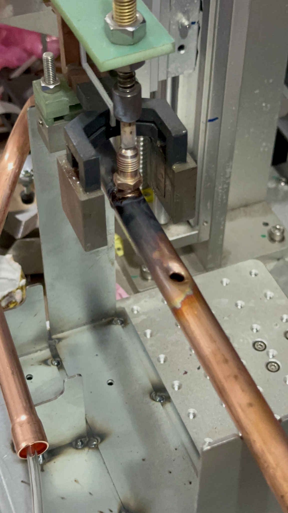

Engineering in practice
From observation to physical detail.
The work involved understanding how parts were produced and assembled, documenting dimensions and process details, and thinking about how the workflow could be made more consistent and efficient.

